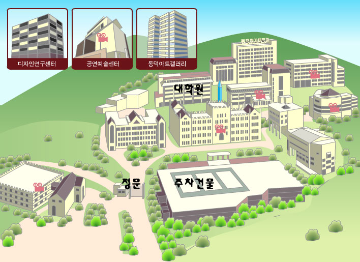

<table width="660"><tr><td>

<h1>
정보과학회 프로그래밍언어연구회 (SIGPL)
<br>2007 춘계학술대회
</h1>
<center><table><tr><th align="left">
- 일시: 2007년 4월 28일 (토) 13:00-16:50
<br>- 장소: 동덕여자대학교 대학원 210호
</td></tr></table>
</center>
<br>

안녕하십니까?  한국정보과학회 프로그래밍언어연구회(SIGPL)는 2007
프로그래밍언어연구회 춘계학술대회를 서울 동덕여자대학교에서
개최합니다.  회원 여러분의 많은 참여와 관심을 부탁드립니다.

<br><br><b>한국정보과학회 프로그래밍언어연구회 운영위원장 표창우</b>

<h2> 프로그램  </h2>
<ul>
<li> 프로그램
<table border="1pt" bordercolor="#808080" cellspacing="0"><tr><td>
<table>
<tr><td>
13:00
  </td><td colspan="2"> 
  등록
</td></tr><tr><td rowspan="2">
13:30
  </td><td bgcolor="#ffddcc" colspan="2">
  초청강연 I
</td></tr><tr><td width="55%">
   Refining Data Layouts in Code Generation
  <br>(코드 생성에서의 데이터배치 최적화의 예)
  </td><td>
  최윤서 (서울대)
</td></tr><tr><td>
14:20
  </td><td colspan="2"> 휴식
</td></tr><tr><td rowspan="2">
14:30
  </td><td bgcolor="#ffddcc" colspan="2">
  초청강연
  </td></tr><tr><td>
   Dynamic Reverse Code Generation for Reverse Execution
  </td><td>
  이주용 (BRICS, U. Aarhus, Denmark)
</td></tr><tr><td>
15:20
  </td><td colspan="2"> 휴식
</td></tr><tr><td>
15:00
  </td><td colspan="2" bgcolor="#ffddcc"> 논문발표 
</td></tr><tr><td rowspan="4"></td><td>
자바 메모리 모델을 이용한 SAT 기반 멀티 스레드 자바 소프트웨어 검증
</td><td>
이태훈, 권기현 (경기대)
</td></tr><tr><td>
가상기계를 위한 네이티브 인터페이스 정의 언어
</td><td>
박지우 (동국대), 이창환 (링크젠), 오세만 (동국대)
</td></tr><tr><td>
CAM(Copy-Add-Move)을 이용한 바이너리 패치 방법
</td><td>
이민재, 한경숙 (한국산업기술대), 우덕균 (한국전자통신연구원)
</td></tr><tr><td>
웹 응용 프로그램의 보안 취약성 분석
</td><td>
김영민, 안준선 (한국항공대학교)
</td></tr><tr><td>
16:50
  </td><td colspan="2"> 폐회
</td></tr></table>
</td></tr></table>

<li> 참고: <a href="cfp.html">논문 모집 공고</a>
</ul>
 
<h2> 등록안내 </h2>
<ul>
<li> 등록비 (사전 등록 마감: <font color="red">2007년 4월 25일</font>)
<table border="1" bordercolor="#808080" cellspacing="0">
<tr><th>&nbsp;</th><th>사전등록 (회원)</th><th>사전등록
(비회원)</th><th>현장등록 (회원 및 비회원)</th></tr>
<tr align="center"><th>학생</th><td>20,000원</td><td>25,000원</td><td>25,000원</td></tr>
<tr align="center"><th>일반</th><td>30,000원</td><td>35,000원</td><td>35,000원</td></tr>
</table>
<li> 등록비에는 간식 및 음료, 논문집, 저녁 포함
<li> 영수증은 당일 등록과 동시에 등록 데스크에서 발급
<li> 현장에서 회원 가입 가능
<li> 등록 방법: 등록페이지를 통하여 등록
</ul>


<h2> 준비위원회 </h2>
<ul>
<li> 조직위원장: 이은영 교수 (동덕여대)
<li> 학술위원장:       김도형 교수 (성신여대)
<li> 문의: 총무 창병모 교수 (숙명여대)
</ul>

<h2> 장소안내 </h2>
<ul>
<li> 동덕여자대학교 오시는 길 (136-714 서울시 성북구 하월곡 2동 23-1 동덕여자대학교)
<br>  
<li> 행사 장소 (대학원 210호)  오시는 길
<br> 

<li> <b>시내버스</b>
 <ul>  
 <li> 종암,압구정,고속터미널:148 (학교앞 하차)
 <li> 성북역,신설동,신촌,마포구청: 163
 <li> 우이동,수유,미아,외대:1217
 <li> 면목동,청량리,고대 : 2111(6호선 월곡역 하차)
 <li> 정릉,장위동 :1113
 <li> 삼선교,성북구청,고대 :1111
 <li> 경동시장,상월곡:1226
 <li> 장위동, 미아삼거리 : 성북10,성북11
 <li> 인천공항,도봉,노원[공항버스]:6호선 월곡역 하차
 <li> ※ 자세한 버스노선은 [서울시 버스노선 안내]에서 확인하시기 바랍니다. 
 </ul>
<li> <b>지하철</b>: 6호선 월곡역(동덕여대역)에서 하차 : 2번/3번 출구에서 500m 지점 
</ul>

</td></tr></table>
